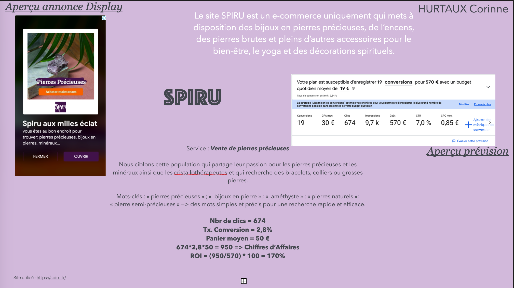
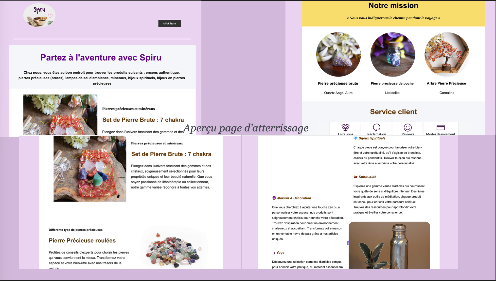
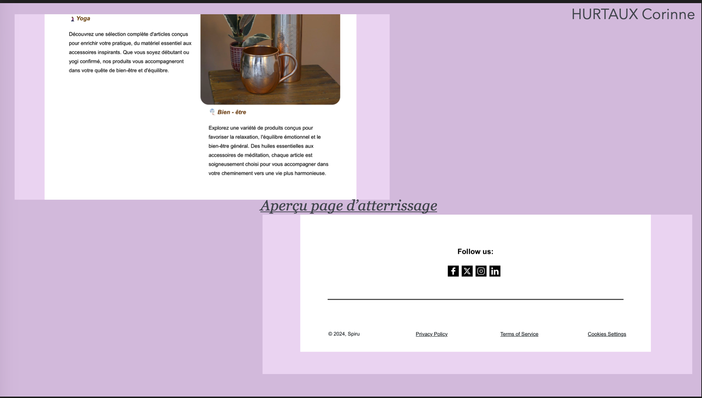

Spiru Plan — Google Ads
Apprentissage et mise en pratique du référencement payant Google Ads
📋 Contexte du projet
Dans le cadre de ma formation BTS SIO SLAM, j'ai travaillé sur le projet Spiru Plan, une boutique en ligne spécialisée dans la vente de bijoux et accessoires en pierres précieuses, de l'encens, du yoga et des décorations spirituelles.
L'objectif était d'apprendre à utiliser Google Ads pour améliorer la visibilité en ligne de la boutique et augmenter ses conversions. Ce projet m'a initié au référencement payant (SEA) et à l'analyse des performances publicitaires.
🎯 Mission et réalisations
- Analyse du site Spiru Plan et de sa cible commerciale (pierres précieuses, bien-être)
- Configuration d'une campagne Google Ads Display avec ciblage précis
- Recherche et sélection de mots-clés stratégiques (pierres précieuses, bijoux, minéraux)
- Création et optimisation de l'annonce avec textes et visuels adaptés
- Analyse des métriques : taux de clics, conversions, ROI et coût par acquisition
- Calcul du retour sur investissement : ROI = 170%
💡 Compétences développées
Développer la présence en ligne de l'organisation
J'ai mis en place une campagne publicitaire digitale pour augmenter la visibilité de Spiru Plan et attirer une audience qualifiée sur le site e-commerce, contribuant directement à sa présence en ligne.
Organiser son développement professionnel
Ce projet m'a permis d'explorer un domaine nouveau — le marketing digital — et d'acquérir des compétences transversales en analyse de données et en stratégie numérique.
🛠️ Outils utilisés
Publicité en ligne
Analyse & Reporting
⚠️ Difficultés rencontrées
Sélection des mots-clés et ciblage
Problème : Trouver les mots-clés les plus pertinents pour toucher la bonne audience, sans dépenser le budget sur des recherches non qualifiées, a nécessité une analyse approfondie.
Solution : J'ai utilisé le planificateur de mots-clés Google pour identifier les termes à fort volume et à bonne intention d'achat : "bijoux en pierre", "améthyste", "pierres naturelles", etc.
✅ Résultats et bilan
La campagne Google Ads a permis d'obtenir des résultats mesurables et positifs : 674 clics générés, un taux de conversion de 2,8%, et un retour sur investissement (ROI) de 170% sur un budget quotidien de 30€.
Ce projet m'a ouvert les yeux sur les possibilités du marketing digital et sur l'importance de l'analyse des données pour optimiser les performances d'une campagne publicitaire en ligne.
Ce que j'ai appris : La publicité en ligne repose sur une compréhension fine de sa cible, un choix de mots-clés précis et une analyse continue des performances pour maximiser le retour sur investissement.
📸 Aperçu du projet


